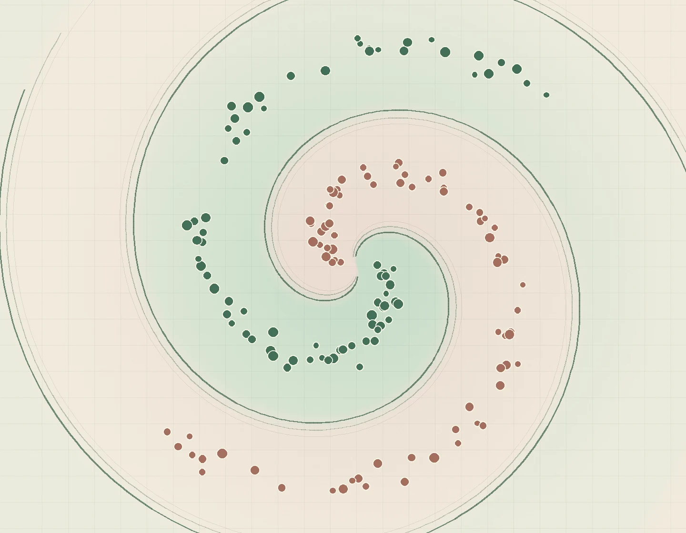

选择一个机器学习主题。

异或分类
一条直线够吗？
3 / 4分类正确
目标 0目标 1错分
h₁ = step(x₁ + x₂ − 0.5)h₂ = step(x₁ + x₂ − 1.5)ŷ = step(h₁ − h₂ − 0.5)选择样本
先猜一猜
一条直线最多能正确分类几个 XOR 样本？
选择答案后查看解释。
分类阈值
阈值提高，谁会被漏掉？
卷积窗口
一个输出格，看向哪里？
改变步幅或填充，再点一个输出格。
学习路径
12 个主题 · 24 道练习
出去看看
视频、可视化和在线读物，随手捞一个。